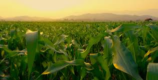

Fruits and Vegetables
Collaborate with local councils to re-design local green spaces into use as valuable community assets
Grains and Cereals
Create accessible employment and skills training opportunities for local residents
Proteins
Tackle food waste. Composting food scraps can help reduce your carbon footprint and return nutrients
to the soil.
Dietary Fats
An approach to food production that aims to minimize the negative environmental impacts of farming.

Food Assistance Programs
Aim to ensure that people, particularly those with low income or in vulnerable situations, have
access to adequate and healthy food. Food assistance is vital for improving public health, reducing
hunger, and promoting overall well-being.

Healthy Eating Tips
Nutrition Made Simple
Eating well doesn’t have to be complicated. Explore tips for making nutritious meals, meal planning,
and grocery shopping on a budget. Learn how to shop smarter and cook healthier with our easy guides.
Sustainability in Food
Eating for the Planet
We provide resources to help you make more sustainable food choices. Learn about reducing food
waste, choosing local and seasonal produce, and how to grow your own food at home.
Diversity
Having a variety of crops (e.g., grains, vegetables, fruits) and livestock species helps ensure food
security, reduce risks of crop failure, and improve nutritional balance.Food resources also reflect
cultural preferences and dietary habits.
Innovation
Advances in biotechnology, genetic modification, automation, and precision farming can improve food
production and reduce environmental impactAdvances in biotechnology, genetic modification,
automation, and precision farming can improve food production and reduce environmental impact.
Ethical Considerations
Ensuring that food is produced under ethical conditions, where farmers and workers are paid fairly
and treated with dignity.How food resources from animals (e.g., meat, dairy, eggs) are sourced in
ways that minimize harm and adhere to ethical standards.

Global Food Security
To eliminate hunger and ensure that all people, especially vulnerable populations, have access to
sufficient, nutritious, and safe food at all times.Improving infrastructure and access to markets
for farmers in developing regions.
Supporting emergency food relief and disaster recovery efforts.
Supporting Nutritional Access
promote healthy eating and ensure that nutritious food is accessible and affordable to all, with a
focus on combating malnutrition and diet-related diseases.Providing nutrition education programs in
schools, communities, and healthcare settings.
Ensuring access to nutritious food.